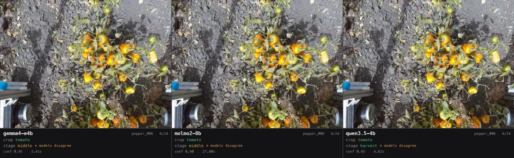

This track asks a simpler question than the reconstruction work: shown a single frame of a crop row, can a vision-language model name the crop and judge its growth stage? Three models got an identical set of 72 frames and an identical prompt, then were scored against each other. The point was to establish what off-the-shelf models already manage before any training is attempted.
Everything ran locally on an Apple M4, which rules out the largest models and makes speed a real criterion rather than an afterthought. Crop type has free ground truth, because each source clip contains exactly one crop and the filename records it. Growth stage has no ground truth at all — which turned out to be the more interesting half of the result, and then the half that went wrong in a way the benchmark had no way to catch.
Libraries, and what each was chosen over
- MLX, mlx-vlmRuns the models on the M4's GPU. Chosen over PyTorch, whose Apple backend is slower for this workload and lacks quantised builds of these particular models. MLX is Apple's own framework and targets this hardware specifically.
- HF HubFetches and caches the three checkpoints. Chosen over vendoring weights by hand — they are distributed there anyway, and the cache makes repeat runs free.
- FFmpegSamples frames out of the clips at a fixed interval. Chosen over OpenCV here because this track needs nothing but decoding, and FFmpeg handles the odd MJPEG files without fuss.
- PillowDraws each model's verdict onto the frames to produce review footage. Chosen over matplotlib because the output is a composited image, which is Pillow's job and not matplotlib's.
Pipeline
Speed and reliability
| Model | Crop accuracy | Mean latency | p95 | Total run | Schema OK |
|---|---|---|---|---|---|
| qwen3.5-4b | 100% | 4.75 s | 5.21 s | 5.7 min | 100% |
| molmo2-8b | 67% | 32.16 s | 48.15 s | 38.6 min | 100% |
| gemma4-e4b | 65% | 5.82 s | 10.75 s | 7.0 min | 100% |
216 calls, zero parse errors, zero schema violations. Reliability was never the limitation — and Qwen is not just the fastest in the mean but the tightest in the tail, with a p95 barely above it.
Qwen ran seven times quicker than Molmo for better results, which is the kind of outcome that makes parameter count a poor proxy for anything. On crop identification the task is evidently within reach of a four-billion-parameter model on a laptop.
Where the crop answers actually diverge
The aggregate accuracies hide the shape of the errors, which is more useful than the score. Broken out per clip, almost all of the loss collapses into a single confusion:
| Model | Overall | pepper.mp4 → says | broccoli.mp4 → says | cabbage.mp4 → says |
|---|---|---|---|---|
| gemma4-e4b | 65% | tomato ×24 | cabbage ×24 | cabbage ×23, other ×1 |
| molmo2-8b | 67% | tomato ×24 | cabbage ×24 | cabbage ×24 |
| qwen3.5-4b | 100% | tomato ×24 | broccoli ×24 | cabbage ×24 |
Every answer is unanimous within its clip — no model wavers frame to frame. Gemma and Molmo collapse broccoli into cabbage across all 24 of its frames, and that one confusion accounts for their entire deficit bar a single stray cabbage frame. Note what these percentages are scored against: the manifest, which records the pepper clip as tomato — so every model is credited for 24 frames it gets wrong, a point the last section returns to.
Stage, and what agreement is standing in for
Growth stage has no ground truth, so the strongest available signal is whether independently trained models agree. They do not.
| Pair | Crop agreement | Stage agreement |
|---|---|---|
| gemma4-e4b vs molmo2-8b | 99% | 24% |
| gemma4-e4b vs qwen3.5-4b | 65% | 71% |
| molmo2-8b vs qwen3.5-4b | 67% | 11% |
All three agree on stage for 2 of 72 frames — 3%. The Molmo–Qwen pair agrees 11% of the time, which is close to what random labelling would produce.
The distribution explains why, and it is worse than disagreement. Each model emits a near-constant stage per crop: Molmo calls every broccoli and every cabbage frame harvest; Qwen calls every broccoli frame middle; Gemma calls both middle throughout. The stage label is largely a function of which crop the model thinks it is looking at, not of what the plant in the frame is doing. Agreement is then just a question of whether two models happened to pick the same constant for the same crop — which is exactly what the 99%-crop/24%-stage row is showing.
That reading matters more than the numbers. A benchmark that scored stage against labels would have reported three mediocre models; what it is actually measuring is that none of them is doing per-frame stage reasoning at all.
The crop that was wrong on both sides

Every model called the pepper clips "tomato". So did the manifest's ground truth, which is why Qwen scored a flawless 100%. The overhead camera from the reconstruction track later settled it: the plants are unmistakably chili peppers. The ground truth was wrong, the models were wrong, and the benchmark quietly rewarded the error.
This is the clearest argument for the reconstruction track, and it is an argument about geometry rather than models. A ground-level camera buried in foliage sees small orange fruit on a sprawling plant, and tomato is a reasonable guess from there; the view from directly above resolves the shape immediately. Perspective was doing more work than model choice.
What this changes
- Correcting the pepper mislabel in the manifest is the immediate fix, and it moves Qwen off 100% — which is the honest outcome.
- Stage assessment needs labels before it needs better models. Without ground truth there is no way to tell a good answer from a confident one, and all three models are confident.
- The frames where the three disagree are the ones worth labelling first, because they mark exactly where the task is hard. There are 70 of them.
- A stage judgement is far more useful attached to a specific plant at a known position than to an anonymous frame. Feeding each detected plant's cropped image to a model, rather than a whole frame, is where this track meets the reconstruction one.